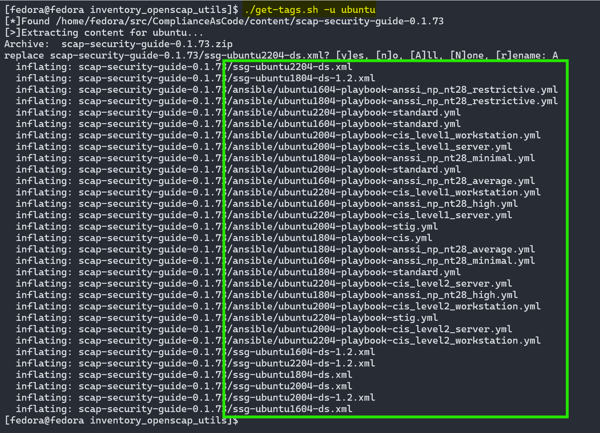

OpenSCAP Practical Usage
Install OpenSCAP, pull compliance profiles from GitHub/ComplianceAsCode, debug policies with Ansible's -C and -D options, apply, test, and maintain policies with Ansible tags.
Quickstart Demo
Start Here
If you want to dive in before reading the details, clone the latest ansible-configs:
mkdir ~/src
cd ~/src
git clone https://github.com/straysheep-dev/ansible-configs
cd ansible-configs/inventory_openscap_utils
and follow the steps below.
Run ./download-content.sh to pull the latest OpenSCAP policy release from GitHub.

It will automatically unzip policy files matching the current OS. To specify another OS, use -u <os-name>.

You can list all available policy files with -l.

The wrapper script is written to interpret posix-extended regex. Combine rules from multiple policies like this.

Comment out any rules in the tags-*.txt files you don't want to apply, or find break the deployment.

Why Ansible?
Running ./apply-tags.sh with the -d|--diff options will run Ansible with --check --diff, showing you the changes without making them, and failing if a change cannot be made correctly. This is the strength of this approach. With states maintained as tags you can more easily isolate and debug what could have broken a system, especially if you're testing tags in groups.
The wrapper script has built in -h|--help information. You can pass it all the arguments you will usually need to either test a policy on the localhost, or use an inventory + vault.

When the script executes a playbook, the raw command with all of the tags listed will be printed to your screen. This is copy / paste-able to repeat manually if necessary.

There are also folders in the same directory of premade tag sets that will apply as many rules as possible without breaking a system, exceptions being aide and auditd rules. The reason being these rules often endlessly loop, need tuned to your environment, or break the deployment. Use the aide and install_auditd roles instead.
Intro
Previously the best way I knew to customize a policy was through exporting a tailored profile through the SCAP Workbench GUI. This is easy to understand visually, but still required a number of steps to isolate and test small sets of rules at a time.
Spending a lot of time working with Ansible, I learned about tags. SCAP content has strong Ansible support, including the use of tags. This effectively solved all of my problems.
- It was easy to apply a single rule, a set of related rules, types of rules, or a policy, which isolates changes effectively
- I could now take rules from different policies and apply them using a list of tags
- Ansible allows this to be done at scale, to different OS's
- Ansible's
-Cand-Doptions are invaluable for debugging, by showing changes ahead of time
The second point was always the hurdle. Realistically you're using something like the standard system seurity profile or CIS L1 as a baseline, but you'd be missing out on some of the other benchmarks that provide a security benefit with minimal or no usability impact. Applying those profiles in full often completely breaks a system. With hundreds of rules, testing each one on each release used to be impossible to do. With tags you can apply whatever rules from whatever policy you want. This also means you can maintain lists of tags, and note which tags often have breaking changes.
The fourth point (-C and -D options) made it possible to "look ahead" before applying a policy. Ansible will in many cases print exactly what's changing in what file without actually applying the policy. This makes it easy to see not just every change, but every change as it applies to your system.
If you're new to SCAP, continue on. If you already know SCAP, and want to see how to use tags, jump to Ansible Tags and Test Policies via Tags.
References
Much of the tool usage in guide has been copied or closely adapted from the examples in the official documentation. It's also meant to be a condensed view of how to set everything up.
Security Profiles
- Latest source of XCCDF profiles, HTML guidelines, shell, Ansible, Puppet, and remediation scripts
- HTML rendered XCCDF profiles
- Profiles as lists for quick view
Install OpenSCAP & Ansible
See https://www.open-scap.org/download/ for all installation methods.
The bare minumum to apply the compliance profiles requires a linux shell, and ideally Ansible depending on how you want to apply them. The OpenSCAP utlities are required to generate reports, custom profiles, and remediate system states. If you want a to take a modular approach like this guide recommends, you should be using Ansible.
Both the CLI and GUI tool can accomplish the same thing. This guide will focus on the CLI tools.
# Install OpenSCAP CLI tools
apt install libopenscap8 # Debian/Ubuntu
dnf install openscap-scanner # Fedora
yum install openscap-scanner # CentOS
yum install openscap-utils openscap-scanner # RHEL
# Install Scap Workbench GUI tool
sudo dnf install scap-workbench # Fedora
sudo apt-get install scap-workbench # Debian/Ubuntu =<18.04
# Install ansible
python3 -m pip install --user ansible
# Check oscap version
oscap --version
Get the Security Profiles
There are two main methods. On RedHat family systems these are available via your package manager. On Debian family systems, you should pull the latest release from GitHub for up to date policies.
Package Manager
Using your package manager to install the "content" (a.k.a. the SCAP profiles) is recommended.
On RedHat / Fedora, this is called scap-security-guide.
sudo dnf install -y scap-security-guide
On Debian / Ubuntu, these files are named ssg-*. However these are often not available or very outdated. In this case, it's recommended to use the GitHub release archive.
apt install ssg-debian # for Debian guides
apt install ssg-debderived # for Debian-based distributions (e.g. Ubuntu) guides
apt install ssg-nondebian # for other distributions guides (RHEL, Fedora, etc.)
apt install ssg-applications # for application-oriented guides (Firefox, JBoss, etc.)
GitHub Release Archive
The latest security profiles are always available at https://github.com/ComplianceAsCode/content/releases. Prebuilt versions are available as a zip archive, along with an accompanying sha512sum. The tar.bz2 archive does not contain all of the bash and Ansible files for applying policies.
This function is adapted from Bishop Fox's Sliver installer script, obtaining the latest release artifacts from the GitHub API, and downloading them into their own folder under ~/Downloads.
#!/bin/bash
function DownloadGitHubReleases() {
AUTHOR_REPO_LIST='ComplianceAsCode/content'
IGNORE_LIST='(tar\.bz2)'
for AUTHOR_REPO in $AUTHOR_REPO_LIST
do
echo "[>] Creating ~/Downloads/$AUTHOR_REPO..."
mkdir -p ~/Downloads/"$AUTHOR_REPO" > /dev/null
ARTIFACTS=$(curl -s https://api.github.com/repos/"$AUTHOR_REPO"/releases/latest | awk -F '"' '/browser_download_url/{print $4}')
for URL in $ARTIFACTS
do
ARCHIVE=$(basename "$URL")
if [[ ! "$ARCHIVE" =~ $IGNORE_LIST ]]; then
echo "[*]Downloading $ARCHIVE..."
curl --silent -L "$URL" --output ~/Downloads/"$AUTHOR_REPO"/"$ARCHIVE"
fi
done
done
}
DownloadGitHubReleases
The archive is 2GB uncompressed, so save space by extracting only the content relevant to your system.
To extract all files for Ubuntu:
# If you downloaded the zip file
unzip -l scap-security-guide-0.1.72.zip # List files
unzip scap-security-guide-0.1.72.zip *ubuntu* # Extract files
# If you downloaded the tar file
tar -tvjf scap-security-guide-0.1.72.tar.bz2 # List files
tar -xvjf scap-security-guide-0.1.72.tar.bz2 --wildcards '*ubuntu*' # Extract files
If you wanted to only extract the data sources and Ansible playbooks relevant to your system:
source /etc/os-release
unzip scap-security-guide-0.1.73.zip "*ansible/$ID*" "*ssg-$ID*xml"
The default location for SCAP profiles is /usr/share/xml/scap/ssg/content/*.xml. Assuming you're working from a dedicated host for SCAP scanning, it's fine to work from any directory where you've downloaded the GitHub release files. If you want to "install" them on your system, copy the xml profiles.
sudo mkdir -p /usr/share/xml/scap/ssg/content
sudo cp scap-security-guide-0.1.73/*.xml -t /usr/share/xml/scap/ssg/content/
This is optional. With the profiles available you're ready to proceed.
Review Security Profiles
There are a few ways to review the downlaoded security profiles.
To import these policies into SCAP Workbench, see the documentation.
You can extract the shell and Ansible files and review them with a text editor such as vim or VSCode:
code scap-security-guide-0.1.72/bash/ubuntu2204-script-standard.sh
With OpenSCAP installed, review the xml data stream which lists all available profiles with:
oscap info scap-security-guide-0.1.72/ssg-ubuntu2204-ds-1.2.xml
Example output of a SCAP data source:
ubuntu@ubuntu2204:~/Downloads/ComplianceAsCode/content$ oscap info scap-security-guide-0.1.72/ssg-ubuntu2204-ds.xml
Document type: Source Data Stream
Imported: 2024-02-09T04:43:43
Stream: scap_org.open-scap_datastream_from_xccdf_ssg-ubuntu2204-xccdf.xml
Generated: (null)
Version: 1.3
Checklists:
Ref-Id: scap_org.open-scap_cref_ssg-ubuntu2204-xccdf.xml
Status: draft
Generated: 2024-02-09
Resolved: true
Profiles:
Title: CIS Ubuntu 22.04 Level 1 Server Benchmark
Id: xccdf_org.ssgproject.content_profile_cis_level1_server
Title: CIS Ubuntu 22.04 Level 1 Workstation Benchmark
Id: xccdf_org.ssgproject.content_profile_cis_level1_workstation
Title: CIS Ubuntu 22.04 Level 2 Server Benchmark
Id: xccdf_org.ssgproject.content_profile_cis_level2_server
Title: CIS Ubuntu 22.04 Level 2 Workstation Benchmark
Id: xccdf_org.ssgproject.content_profile_cis_level2_workstation
Title: Standard System Security Profile for Ubuntu 22.04
Id: xccdf_org.ssgproject.content_profile_standard
Referenced check files:
ssg-ubuntu2204-oval.xml
system: http://oval.mitre.org/XMLSchema/oval-definitions-5
ssg-ubuntu2204-ocil.xml
system: http://scap.nist.gov/schema/ocil/2
Checks:
Ref-Id: scap_org.open-scap_cref_ssg-ubuntu2204-oval.xml
Ref-Id: scap_org.open-scap_cref_ssg-ubuntu2204-ocil.xml
Ref-Id: scap_org.open-scap_cref_ssg-ubuntu2204-cpe-oval.xml
Dictionaries:
Ref-Id: scap_org.open-scap_cref_ssg-ubuntu2204-cpe-dictionary.xml
Review further information about a profile using the unique Id obtained from the previous command with:
oscap info --profile <Id> /path/to/ssg.xml
Example output:
ubuntu@ubuntu2204:~/Downloads/ComplianceAsCode/content$ oscap info --profile xccdf_org.ssgproject.content_profile_standard scap-security-guide-0.1.72/ssg-ubuntu2204-ds.xml
Document type: Source Data Stream
Imported: 2024-02-09T04:43:43
Stream: scap_org.open-scap_datastream_from_xccdf_ssg-ubuntu2204-xccdf.xml
Generated: (null)
Version: 1.3
Profile
Title: Standard System Security Profile for Ubuntu 22.04
Id: xccdf_org.ssgproject.content_profile_standard
Description: This profile contains rules to ensure standard security baseline of an Ubuntu 22.04 system. Regardless of your system's workload all of these checks should pass.
Evaluate a System
Even without applying a policy, you can evaluate a system against any policy and generate a report in the form of XML and human readable HTML files. Effectively evaluating a system often requires root privileges.
This is easier to read using variables. You can write this to a scan.sh file if it's easier.
#!/bin/bash
results_path='/path/to/results.xml'
report_path='/path/to/report.html'
profile_id='<xccdf_org.ssgproject.content_profile_some_profile>'
ssg_data_file='/path/to/<ssg_data_file>.xml'
oscap xccdf eval --profile "$profile_id" --results-arf "$results_path" --report "$report_path" "$ssg_data_file"
From the documentation:
profile_idThe ID of an XCCDF profile, ID's are listed executingoscap info <ssg_data_file>, and typically start withxccdf_org.ssgproject.content_profile_*results_pathThe file path where the results in SCAP results data stream format (ARF) will be generated as an XMLreport_pathThe file path where a report in HTML format will be generatedssg_data_fileThe file path of the evaluated SCAP source data stream (These are in the root of the compliance as code releases, with XML file extensions)
For example, to evaluate the xccdf_org.ssgproject.content_profile_ospp profile from the /usr/share/xml/scap/ssg/content/ssg-rhel8-ds.xml SCAP source data stream run this command:
results_path='/path/to/results.xml'
report_path='/path/to/report.html'
profile_id='xccdf_org.ssgproject.content_profile_ospp'
ssg_data_file='/usr/share/xml/scap/ssg/content/ssg-rhel8-ds.xml'
oscap xccdf eval --profile "$profile_id" --results-arf "$results_path" --report "$report_path" "$ssg_data_file"
The progress and results will be shown in the terminal. Full results are generated in results.xml as a SCAP data stream and an HTML report. The report is easily readable, and could even be saved as a PDF from the browser for your records.
Remediate a System
There are two ways to remediate a system:
- Immediately after a scan, by adding
--remediate - After scanning, use the results to generate a remediation script or playbook (⭐RECOMMENDED)
If you just want to run all remediation steps (again, high chance of breaking your system), take the bash snippet from Evaluating a System above and add --remediate to it, for example:
oscap xccdf eval --remediate --profile <SNIP>
Instead if you prefer to generate a remediation file based on your scan (which is recommended), do the following.
First after evaluating a system, get the metadata from your scan's results:
oscap info results.xml
You want the value of the Result ID:, for example: xccdf_org.open-scap_testresult_xccdf_org.ssgproject.content_profile_standard.
Generate remediation files from that scan's results. There are multiple options for --fix-type.
--fix-type bash--fix-type ansible
You could even write this as make-remediation.sh. To create an Ansible remediation playbook:
#!/bin/bash
results_file='/path/to/results.xml'
result_id='<xccdf_org.open-scap_testresult_xccdf_org.ssgproject.content_profile_name>'
fix_type='ansible'
remediation_file='/path/to/playbook.yml'
oscap xccdf generate fix --fix-type "$fix_type" --output "$remediation_file" --result-id "$result_id" "$results_file"
Apply a Policy
IMPORTANT: As a reminder, In most cases it is better to scan a system, and generate a custom remediation playbook based on the system's current state. Jump to Ansible Tags and Test Policies via Tags for a modular approach to testing policies by using tags.
All policies have shell scripts and Ansible playbooks available to apply them. You should be applying these policies as root, either through sudo, as root itself, or through some other elevation mechanism like Ansible's -b, --ask-become-pass, or ansible_become_password: {{ <sudo-password> }} in a vault file.
The downside to using bash scripts is you cannot specify tags, limiting what steps in the script to apply. Apart from bash scripts being potentially harder to maintain and scale, Ansible has the -C and -D options to show what will change before applying the policy.This is invaluable for testing and validating remediation scripts. Only Ansible can use tags.
Apply a prebuilt policy using bash (highest chance of breaking a system) or a remediation policy (also high chance of breaking systems without testing):
sudo bash ./scap-security-guide-0.1.73/bash//ubuntu2004-script-standard.sh
sudo bash ./path/to/remediation.sh
Apply a policy using Ansible. One again, highlighting the use of tags.
ansible-playbook -i "localhost," -c local playbook.yml # as root
ansible-playbook -i "localhost," -c local -b --ask-become-pass playbook.yml # using sudo
ansible-playbook -i "localhost," -c local -b --ask-become-pass playbook.yml --tags tag1,tag2 # using tags
NOTE: Some playbooks on Debian based systems will fail due to the line set -o pipefail in tasks using ansible.builtin.shell. This is because sh defaults to dash on Debian based systems, and dash has no support for pipefail.
An easy work around for this can be made at the top of the Ansible playbook file, by adding ansible_shell_executable: /bin/bash under vars:.
<SNIP>
- name: Ansible Playbook for xccdf_org.ssgproject.content_profile_standard
hosts: all
vars:
ansible_shell_executable: /bin/bash
<SNIP>
Ansible Tags
To use tags, they must be included on the CLI with --tags tag1,tag2..., otherwise this won't work effectively given that each prebuilt Ansible file is a self contained playbook. You would need to modify that playbook to be a task file, and any manual modification of the SCAP content is what we're trying to avoid by using tags.
Benefits of using tags:
- SCAP playbooks tag every task with its rule name
- Maintain a list of tags instead of code, profiles, or complex scripts
- Repeatability, portability between profiles and OS's
- Easier to modify, debug, and create a "state" for a system
- Use one list of tags with multiple profiles
- If a tag is missing or not present in the playbook, that tag is basically ignored. All other tags still present will execute.
With OpenSCAP content, every task in every playbook is "tagged", meaning exactly what it implies; here's an example task:
- name: Comment out any occurrences of kernel.randomize_va_space from config files
replace:
path: '{{ item.path }}'
regexp: ^[\s]*kernel.randomize_va_space
replace: '#kernel.randomize_va_space'
loop: '{{ find_sysctl_d.files }}'
when: ansible_virtualization_type not in ["docker", "lxc", "openvz", "podman", "container"]
tags:
- DISA-STIG-UBTU-22-213020
- NIST-800-171-3.1.7
- NIST-800-53-CM-6(a)
- NIST-800-53-SC-30
- NIST-800-53-SC-30(2)
- PCI-DSS-Req-2.2.1
- PCI-DSSv4-3.3.1.1
- disable_strategy
- low_complexity
- medium_disruption
- medium_severity
- reboot_required
- sysctl_kernel_randomize_va_space
Tags here are as broad as the policy this task could apply to (e.g. DISA-STIG-UBTU-22-213020), and as specific as the task itself (sysctl_kernel_randomize_va_space). Knowing this, we could execute tasks in a remediation script systematically. This is the least overwhelming approach to begin testing a policy.
For example, execute all tasks that are low_complexity:
ansible-playbook -i "localhost," -c local -b --ask-become-pass ./remediate.yml --tags low_complexity
Or just execute tasks related to the setting itself; sysctl_kernel_randomize_va_space:
ansible-playbook -i "localhost," -c local -b --ask-become-pass ./remediate.yml --tags sysctl_kernel_randomize_va_space
Or avoid tasks that require a reboot:
ansible-playbook -i "localhost," -c local -b --ask-become-pass ./remediate.yml --skip-tags reboot_required
The easiest way to do things is with a tags.txt file. For readability you could even write the file with each tag on a newline, and comment # out tags you don't want to use. The trick is parsing this file using command substitution. So for example, take this tags.txt file:
# tags.txt
sysctl_net_ipv4_tcp_syncookies
#sysctl_fs_protected_symlinks
sysctl_fs_suid_dumpable
sysctl_kernel_randomize_va_space
Parse it with the following command:
grep -Pv "^#" < tags.txt | tr '\n' ','
grep -Pv "^#"removes any commented linestr '\n' ','translates the newlines into commas
Run the playbook while loading the comma separated list of tags with:
ansible-playbook -i "localhost," -c local -b --ask-become-pass scap-security-guide-0.1.73/ansible/ubuntu2204-playbook-standard.yml --tags $(grep -Pv "^#" < tags.txt | tr '\n' ',')
Doing this will give you full control over exactly what settings to maintain for really any system. You only need to maintain the list of tags to apply with --tags and the list to ignore through --skip-tags. These tags are consistent through each SCAP content release, so when a new version is released for an operating system and SCAP file, reuse the same commands to obtain and apply those tags.
Extracting All Tags
To extract all tags from a playbook, into a list of one tag per line:
ansible-playbook scap-security-guide-0.1.73/ansible/ubuntu2204-playbook-standard.yml --list-tags 2>&1 | grep 'TASK TAGS' | sed -E 's/^\s+TASK TAGS://g' | sed -E 's/, /,/g' | sed -E 's/ \[//g' | sed -E 's/\]$//g' | tr ',' '\n' | tee tags.txt
To extract all tags from all policies based on your system (e.g. Fedora, or Ubuntu):
#!/bin/bash
# get-tags.sh
content_path='scap-security-guide-0.1.73/ansible/'
source /etc/os-release
cd "$content_path"
for playbook in ./*"${ID}"*.yml;
do
ansible-playbook "$playbook" --list-tags 2>&1 | grep 'TASK TAGS' | sed -E 's/ TASK TAGS://g' | sed -E 's/, /,/g' | sed -E 's/ \[//g' | sed -E 's/\]$//g' | tr ',' '\n'
done | tee tags.txt.tmp >/dev/null
sort < tags.txt.tmp | uniq | tee tags.txt >/dev/null
rm tags.txt.tmp
Using Lists of Tags
In some cases, policies will share the same tag (basically they both have the same rule). In other cases, you're pulling tags from multiple policies. In that case, make note of each policy you want to apply tags from because you'll need to run your list of tags against each of those playbooks.
There are two ways to look at tags. First, what I will call "meta" tags, that define a set of changes. For example tags such as PCI-DSSv4-10.2.1, disable_strategy, or low_disruption include multiple rules and changes. The tag itself implies the types of changes it will be making or the policy it's adhearing to.
Some examples of "meta" tags that should be generally safe to call (you should still review and test them individually):
disable_strategy
enable_strategy
low_complexity
low_disruption
no_reboot_needed
Alternatively, (and what I argue is the more robust way) since you're already having to review every single change for effectiveness, determine which rules you want to apply and reference them by their individual tag.
The following list includes general hardening rules that I've slowly added to over time, and have had in place on all my systems, desktop or server (when applicable) since Ubuntu 18.04. I previously maintained these with interactive scripts, which became harder to update or scale, and is ultimately what prompted the writing of this guide. These systems were used for various tasks such as virtualization, development, VPN servers, general usage (web browsing, conferencing, office document creation, content creation) and even Kali Linux for general security testing.
coredump_disable_backtraces
coredump_disable_storage
grub2_enable_iommu_force
kernel_module_cramfs_disabled
kernel_module_freevxfs_disabled
kernel_module_hfs_disabled
kernel_module_hfsplus_disabled
kernel_module_jffs2_disabled
kernel_module_rds_disabled
kernel_module_tipc_disabled
kernel_module_udf_disabled
package_bind_removed
package_cups_removed
package_cyrusimapd_removed
package_dhcp_removed
package_dovecot_removed
package_httpd_removed
package_inetutilstelnetd_removed
package_netsnmp_removed
package_nfskernelserver_removed
package_nginx_removed
package_nis_removed
package_ntpdate_removed
package_openldapclients_removed
package_openldapservers_removed
package_rpcbind_removed
package_rsh_removed
package_samba_removed
package_squid_removed
package_talk_removed
package_telnetd_removed
package_telnetdssl_removed
package_telnet_removed
package_vsftpd_removed
package_xinetd_removed
service_apport_disabled
service_avahidaemon_disabled
service_cups_disabled
service_kdump_disabled
service_timesyncd_enabled
sysctl_fs_protected_hardlinks
sysctl_fs_protected_symlinks
sysctl_fs_suid_dumpable
sysctl_kernel_dmesg_restrict
sysctl_kernel_randomize_va_space
sysctl_net_ipv4_conf_all_accept_redirects
sysctl_net_ipv4_conf_all_accept_source_route
sysctl_net_ipv4_conf_all_log_martians
sysctl_net_ipv4_conf_all_rp_filter
sysctl_net_ipv4_conf_all_secure_redirects
sysctl_net_ipv4_conf_all_send_redirects
sysctl_net_ipv4_conf_default_accept_redirects
sysctl_net_ipv4_conf_default_accept_source_route
sysctl_net_ipv4_conf_default_log_martians
sysctl_net_ipv4_conf_default_rp_filter
sysctl_net_ipv4_conf_default_secure_redirects
sysctl_net_ipv4_conf_default_send_redirects
sysctl_net_ipv4_icmp_echo_ignore_broadcasts
sysctl_net_ipv4_icmp_ignore_bogus_error_responses
sysctl_net_ipv4_ip_forward
sysctl_net_ipv4_tcp_syncookies
sysctl_net_ipv6_conf_all_accept_ra
sysctl_net_ipv6_conf_all_accept_redirects
sysctl_net_ipv6_conf_all_accept_source_route
sysctl_net_ipv6_conf_all_forwarding
sysctl_net_ipv6_conf_default_accept_ra
sysctl_net_ipv6_conf_default_accept_redirects
sysctl_net_ipv6_conf_default_accept_source_route
Tags in that list appear frequently throughout all of the security polices. Looking at an easy to read list like this will help you apply hardening to a system based on what you want. One example is if you're building an nginx server, comment out the line package_nginx_removed. Similarly if you have a personal workstation and need to print frequently, you'll want to comment package_cups_removed and service_cups_disabled.
To obtain tags from other (or future) policies, just use the previously mentioned get-tags.sh section to generate your own list.
Test Policies via Tags
Let's take the CIS L2 Workstation benchmark. This has numerous changes that could take a long time if not properly tested and manually configured (anything related to aide) or break the system entirely. Using ansible-playbook's -C and -D to check and diff the changes, we can walk through a "dry run" until all of the tasks we have tags specified for execute, showing us exactly what will change.
Since aide causes problems up front, we'll search the remediation playbook for any tasks related to aide, and add each task's tag as an argument to --skip-tags.
ansible-playbook -i "localhost," -c local -b --ask-become-pass ./remediate.yml --tags low_complexity,low_disruption --skip-tags aide_build_database,aide_check_audit_tools -D -C
NOTE: This may result in an infinite loop, leaving you to ctrl+c out of the dry run. Running this play without -C -D will set all of the changes, again potentially ending in an infiite loop to ctrl+c out of. This may be specific to this version of this policy, but these types of things can happen, which is why these policies need tested.
Reboot to apply any changes that require it.
Review and Repeat
Now you can scan the system again, saving separate results files for comparison to the originals. Filter down the html report by failed and severity to prioritize your next steps. In some cases, tasks simply do not make the changes they intend to make, and you must plan to do those manually (most of the auditd tasks). In others, the change has been made but isn't being read. Reviewing the html reports will always be necessary when baselining a new system, but once you determine what must be applied manually or by Ansible, you can repate these steps as needed.
Generally, anything needing a site specific configuration like aide or auditd may benefit from be configured separately from these policies. The same goes for repartitioning drives, these policies will not attempt to do this for you. Whether this means writing your own anisble roles for these items or similar, is up to you.
The following section walks through applying a standard profile to Ubuntu 22.04. This may be helpful as practice if you were lost in the last example.
Rules Without Ansible Tasks
Some rules simply have no Ansible tasks to apply them. It's also possible a task continues to fail during a play. In both cases you will have to use a bash remediation script.
Take the auditd rules for the CIS L2 workstation benchmark on Ubuntu 22.04 as an example. These Ansible tasks may fail, resulting in an endless loop when running the playbook. You will need to resolve this manually, either on the command line, or with the SCAP Workbench GUI tool (install via dnf on Fedora, or compile from source on Ubuntu).
Related rules are often grouped together in policy files, but not always. Whether you're using the prebuilt bash scripts that ship with ComplianceAsCode/content, a remediation script you created using oscap, or building a custom profile in SCAP Workbench, the same technique applies.
The following approach tries to mimic what we've been doing using Ansible tags.
NOTE: Rules in bash remediation scripts can't be easily referenced in groups by name, type, or policy, in the way that they can be by tags in Ansible playbooks.
Customize with SCAP Workbench
You can customize profiles for any policy from the Workbench GUI.
sudo dnf install -y scap-workbenchon Fedora or compile from source- Run SCAP Workbench, select the main
Profileyou're targeting from the Profile drop down menu - To the right of the
Profiledrop down menu, click theCustomizebutton - You'll be prompted to name the profile, Click OK or change the custom profile name
- Click
Deselect allat the top - Use the search box to find all the rules you need and enable them by checking their boxes
- Click OK when you're done
- Now back on the main window, select the
Generate remediation roledrop down on the bottom left, choosebash, save it - To save the customization profile, go to File > Save Customization Only
Run the remediation script with sudo bash ./remediation.sh.
Customize with bash
List every rule matching *rule_audit*, which will also display the rule number as (<some-number> / <some-number>):
grep -P "BEGIN fix.+rule_audit.*$" ./ubuntu2204-script-cis_level2_workstation.sh
- Create a copy of the remediation script to edit
- Note the number of the first rule returned by
grep, use that to find that line - Delete everything before that line
- Do the same for the last rule's number, and everything after that line
- Check for any extra rules in between, remove them
Run the remediation script with sudo bash ./remediation.sh.
Using these methods in additon to tags to fill any gaps in policy coverage is a more manageable approach.
Include the script in an Ansible role under files/remediation-auditd.sh or reference it in a playbook. It will be copied to each node and executed.
In some cases it may make more sense to write your own reusable Ansible role or shell script you can use accross multiple machines to remedy the items that are missing. This is something I've found particularly useful with aide and auditd, as a better way to customize and manage them:
Complete Walkthrough of a Policy
This section is to help those getting started.
Lets configure the Standard System Security Profile for Ubuntu 22.04, and make any necessary adjustments to prevent the system from breaking.
Obtain the Id for the "Standard System Security Profile for Ubuntu 22.04":
oscap info scap-security-guide-0.1.73/ssg-ubuntu2204-ds-1.2.xml
Assuming you're using a virtual machine to run these tests, with Ansible installed, and the open-scap content GitHub release downloaded, take a snapshot.
The working directory here is ~/src, with your SCAP content extracted to ~/src/scap-security-guide-0.1.73/.
Start by scanning the system in its default state, and writing the results to a file:
#!/bin/bash
results_path='/home/user/src/results.xml'
report_path='/home/user/src/report.html'
profile_id='xccdf_org.ssgproject.content_profile_standard'
ssg_data_file='/home/user/src/scap-security-guide-0.1.73/ssg-ubuntu2204-ds-1.2.xml'
oscap xccdf eval --profile "$profile_id" --results-arf "$results_path" --report "$report_path" "$ssg_data_file"
Get the Id from the results file:
oscap info /home/user/src/results.xml | grep 'Result ID:' | awk '{print $3}'
Generate a remedation playbook:
#!/bin/bash
results_file='/home/user/src/results.xml'
result_id='xccdf_org.open-scap_testresult_xccdf_org.ssgproject.content_profile_standard'
fix_type='ansible'
remediation_file='/home/user/src/remediate.yml'
oscap xccdf generate fix --fix-type "$fix_type" --output "$remediation_file" --result-id "$result_id" "$results_file"
Now that we have a playbook made based on our system's current state, let's look at the tags in some of the tasks. We can see two interesting tags that may be a good place to start:
low_complexitylow_disruption
nano remediation.yml
<SNIP>
- hosts: all
vars:
var_sshd_set_keepalive: !!str 0
tasks:
- name: Gather the package facts
package_facts:
manager: auto
tags:
- NIST-800-53-CM-6(a)
- PCI-DSS-Req-10.7
- configure_strategy
- ensure_logrotate_activated
- low_complexity ⭐
- low_disruption ⭐
- medium_severity
- no_reboot_needed
<SNIP>
Ansible has two great options for applying policies through playbooks, the --check (-C) and --diff (-D) options. Ansible will read a playbook, and try to tell us what changes will occur when executing that playbook.
ansible-playbook -i "localhost," -c local -b --ask-become-pass ./remediate.yml --tags lowcomplexity,low_disruption --check --diff
Review the results for anything interesting or unexpected.
With a VM snapshot taken, now apply all tasks in the playbook matching those tags:
└─$ ansible-playbook -i "localhost," -c local -b --ask-become-pass ./remediate.yml --tags lowcomplexity,low_disruption
BECOME password:
PLAY [all] *********************************************************************************************************
TASK [Gathering Facts] *********************************************************************************************
ok: [localhost]
<SNIP>
TASK [Remove parameter from files in /etc/ssh/sshd_config.d] *******************************************************
changed: [localhost] => ...
TASK [Insert correct line to /etc/ssh/sshd_config.d/01-complianceascode-reinforce-os-defaults.conf] ****************
changed: [localhost]
<SNIP>
TASK [Remove parameter from files in /etc/ssh/sshd_config.d] *******************************************************
changed: [localhost] => ...
TASK [Insert correct line to /etc/ssh/sshd_config.d/00-complianceascode-hardening.conf] ****************************
changed: [localhost]
<SNIP>
TASK [Ensure auditd is installed] **********************************************************************************
ok: [localhost]
PLAY RECAP *********************************************************************************************************
localhost : ok=23 changed=4 unreachable=0 failed=0 skipped=2 rescued=0 ignored=0
You'll notice if you run this multiple times, 4 tasks will continue to return "changed", while everything else returns as "ok". Investigating the files mentioned in the tasks, we can verify the changes were set correctly:
$ sudo su -
root@ubuntu2204:~# cd /etc/ssh/sshd_config.d/
root@ubuntu2204:/etc/ssh/sshd_config.d# ls -l
total 8
-rw-r--r-- 1 root root 19 May 27 02:58 00-complianceascode-hardening.conf
-rw-r--r-- 1 root root 24 May 27 02:58 01-complianceascode-reinforce-os-defaults.conf
root@ubuntu2204:/etc/ssh/sshd_config.d# cat ./*
PermitRootLogin no
PermitEmptyPasswords no
This is just how Ansible works. It will always write to files in some cases, but this behavior should ensure the files are in the correct state every time it writes to them. We can safely proceed with applying more of the policy.
Next we'll check tasks for tags configure_strategy and ensure_logrotate_activated:
$ ansible-playbook -i "localhost," -c local -b --ask-become-pass ./remediate.yml --tags configure_strategy,ensure_logrotate_activated -D -C
BECOME password:
<SNIP>
PLAY RECAP ********************************************************************************************************
localhost : ok=6 changed=0 unreachable=0 failed=0 skipped=0 rescued=0 ignored=0
All 6 tasks are already "ok".
Let's try checking tasks tagged as medium_severity:
ansible-playbook -i "localhost," -c local -b --ask-become-pass ./remediate.yml --tags medium_severity -D -C
You should see some overlap between these results and what we've already executed; nothing that should break the system. Go ahead and apply all tasks with this tag.
At this point the system should pass (nearly) all checks for the Standard System Security Profile. Feel free to apply the entire remediation playbook.
└─$ ansible-playbook -i "localhost," -c local -b --ask-become-pass ./remediate.yml
BECOME password:
<SNIP>
PLAY RECAP ********************************************************************************************************
localhost : ok=26 changed=6 unreachable=0 failed=0 skipped=2 rescued=0 ignored=0
Finally, scan the system again, changing the output file names from results to results-fixed so we don't overwrite the original results:
#!/bin/bash
results_path='/home/user/src/results-fixed.xml'
report_path='/home/user/src/report-fixed.html'
profile_id='xccdf_org.ssgproject.content_profile_standard'
ssg_data_file='/home/user/src/scap-security-guide-0.1.73/ssg-ubuntu2204-ds-1.2.xml'
oscap xccdf eval --profile "$profile_id" --results-arf "$results_path" --report "$report_path" "$ssg_data_file"
Change ownership of the remediated html files to your non-root user, to open in Firefox.
sudo chown $USER:$USER ~/src/*.html
If you have a "default" install of an Ubuntu VM, you'll likely be failing the "Disk Partitioning" checks, which is fine since this needs addressed manually. These playbooks will not attempt to fix certain things as critical as disk partitions. Additionally you may also be failing the "Set SSH Client Alive Interval". Both of these can be investigated further now that you've narrowed down what needs addressed outside of the playbook.
Conclusion
This was an easy example, but the same process applies to the larger policies. Tags shoud help reduce maintenance and debugging time when applying SCAP content, and being a part of Anisble means this method can scale with your inventory and operating systems.